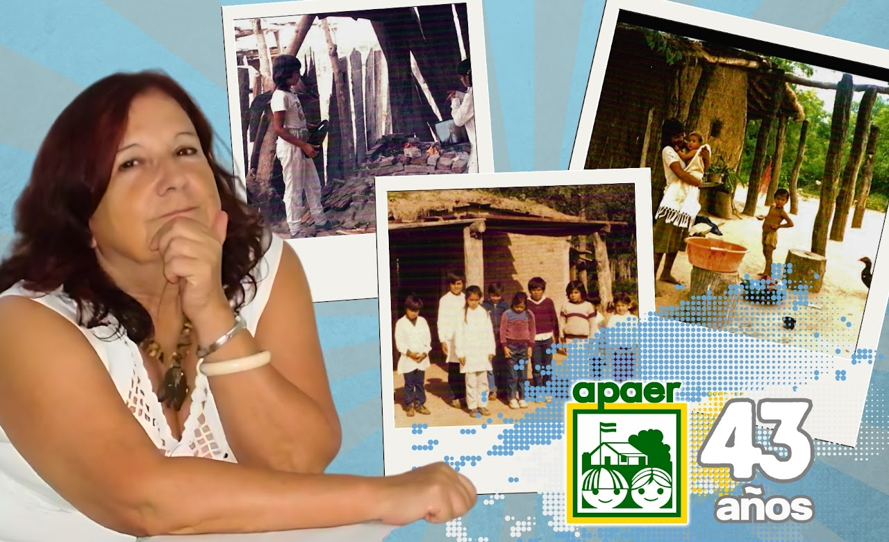

Somos una Asociación Civil que trabaja hace 44 años por una mejor educación rural. Llegamos a escuelas alejadas, muchas sin agua potable ni electricidad, para que los alumnos completen su educación y se desarrollen en su comunidad.
APAER nació en 1982 por iniciativa de Noemí Delellis de Arbetman, en respuesta a los pedidos de ayuda de directores de escuelas rurales. Fue una acción impulsada desde la ciudadanía que dio origen a una red de colaboración nacional que sigue vigente más de cuatro décadas después. Desde entonces, trabajamos por una educación más equitativa, acompañando a escuelas rurales de todo el país.

En 1982, Noemí Arbetman, profesora de yoga de Villa Devoto, leyó un artículo en una revista sobre la niñez carenciada. Conmovida, decidió reunir a sus alumnas y proponerles ayudar a los chicos del interior del país, especialmente de zonas muy pobres como el Chaco. Enviaron treinta cartas a distintas escuelas rurales de la región, preguntando por sus necesidades. Solo cinco respondieron. Muchas de esas escuelas estaban en pueblos que ni siquiera figuraban en los mapas. Una de esas respuestas llegó desde Pampa del Infierno, y pedía una bandera de ceremonias, alimentos, ropa y útiles escolares. Al viajar para hacer la entrega, se encontraron con una realidad que las marcaría para siempre: chicos caminando kilómetros para asistir a clases en escuelas de barro, con techos de chapa (cuando los había), sin baños, sin pizarrón ni bancos. Si llovía, llovía también en el aula. Fue ese impacto el que encendió el compromiso que dio origen a una red solidaria.
De regreso en Buenos Aires, comenzaron a enviar ropa, libros y útiles escolares que sobraban en sus casas. Las alumnas del gimnasio de Noemí se involucraron activamente: cada una eligió un “ahijado” al que ayudar. Luego se sumaron familiares, amigos y conocidos. Pero con el tiempo, la lista cercana se agotó y las necesidades seguían creciendo. Fue entonces cuando Noemí decidió escribir a los diarios buscando más ayuda. Este es el momento en el que las cartas de lectores empiezan a jugar un papel importante en la expansión de APAER. Las cartas escritas por Noemí y publicadas en los diarios (en particular, en Clarín) fueron una herramienta crucial para obtener apoyo y conectar a más personas con la causa.
El proyecto creció con la fuerza del boca a boca y el eco de los medios. Noemí llegó a publicar 45 cartas en la sección “Cartas al País” del diario Clarín, contando la realidad de las escuelas rurales y pidiendo padrinos. También comenzaron a llegar pedidos desde otras escuelas, y se sumaron padrinos de todo el país… y del mundo: Venezuela, Estados Unidos, Australia. La visibilidad permitió que la red se ampliara rápidamente, conectando a más personas con ganas de ayudar.
Además de materiales, algunos padrinos aportaron recursos para obras de infraestructura. En 1986, por ejemplo, se construyó un anexo para la Escuela N° 450 en Pampa del Infierno con apoyo de Siemens. Otras construcciones y mejoras continuaron en distintas provincias.
A principios de los años 90, el impacto de la red ya era inmenso. APAER había conectado a más de 5.000 padrinos con chicos de más de 1.000 escuelas rurales. Gracias al apoyo recibido, se habían construido 16 escuelas y mejorado muchas otras. Lo que comenzó como una iniciativa de un pequeño grupo de mujeres solidarias, se transformó en una asociación civil con sede propia y presencia nacional, que sigue trabajando incansablemente hasta hoy por una educación más justa y digna en zonas rurales.
Los inicios de APAER estuvieron marcados por reuniones llenas de entusiasmo y compromiso, llevadas a cabo en un departamento en la calle Ciudad de la Paz. Posteriormente, se alquilaba otro espacio en la misma calle, donde comenzó a gestarse un sueño: adquirir un lugar propio. Con el esfuerzo conjunto de los voluntarios, algunos aportaron donaciones, otros préstamos, y uno de ellos incluso ofreció sus ahorros destinados al casamiento de su hija para hacer realidad este proyecto. Fue ese espíritu de solidaridad y trabajo en equipo el que permitió, finalmente, la compra del departamento en la calle Conesa, nuestra actual sede.
Muchas de estas escuelas están ubicadas a más de 10 km de centros urbanos, en zonas de difícil acceso y sin servicios esenciales como agua potable, electricidad o sanitarios. Suelen tener entre 10 y 150 alumnos, la mayoría provenientes de familias de bajos recursos que recorren grandes distancias para llegar a clase. En muchos casos, la escuela es el único espacio donde acceden a una comida diaria. A menudo, un solo docente está a cargo de todos los grados, asumiendo un rol clave tanto en lo pedagógico como en lo comunitario.
Desde nuestra fundación en 1982, el compromiso de APAER ha sido acortar la brecha educativa en el campo. Sin embargo, en estas cuatro décadas, el escenario ha dejado de ser uniforme para convertirse en un mosaico de realidades diversas. Argentina no es una sola ruralidad, y entender esa complejidad es lo que nos permite intervenir donde más se hace necesario.
El campo que vio nacer a APAER ha mutado de forma distinta según la región. Mientras que hace 40 años la realidad era más similar entre provincias, hoy enfrentamos contrastes marcados:
Hoy, conectados con más de 1.500 escuelas, funcionamos como un puente inteligente entre las comunidades y quienes desean ayudar. Aunque el sistema incluye modelos diversos como las Escuelas de Alternancia (EFAs), en APAER centramos nuestra energía en las bases, acompañando procesos que fortalecen las capacidades educativas y sociales desde el inicio.
No pretendemos cambiar el mundo, pero sí acompañar a los chicos para que transformen su propio entorno. En cada paraje, por pequeño que sea, se está gestando el capital humano que definirá el futuro de nuestra tierra. Allí, en la escuela que resiste, es donde empezamos el verdadero cambio. Logros y Potencial: Por qué apostamos al campo
Paradójicamente, las limitaciones del entorno rural esconden fortalezas que los resultados de las pruebas Aprender confirman: